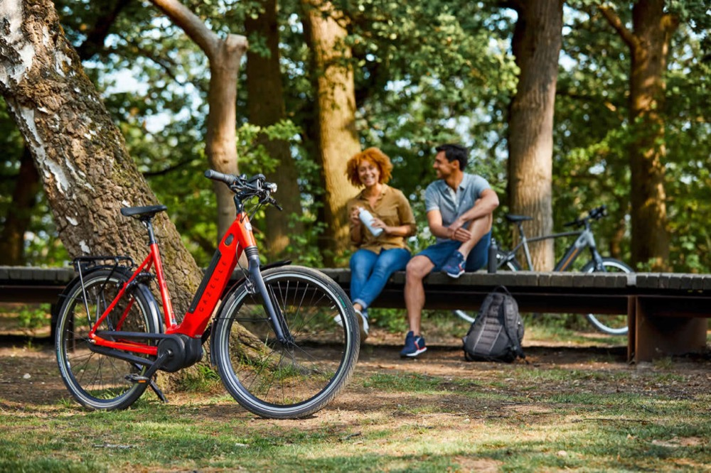
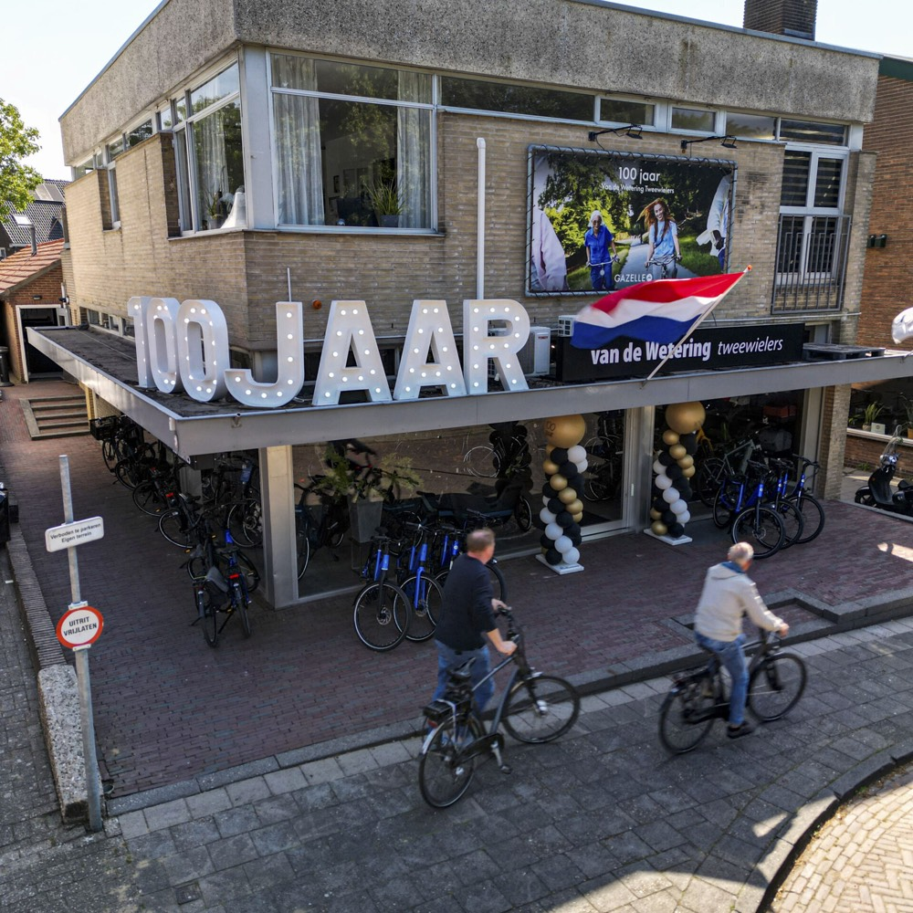
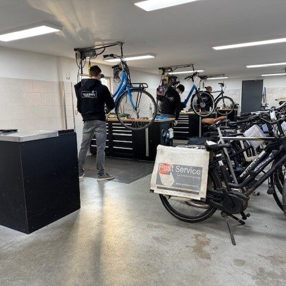

Een duwtje in de juiste richting
Elektrische fietsen
Meer gemak voor de dagelijkse rit en de langere tocht.
Vraag persoonlijk advies
De dagelijkse route. Een nieuwe omweg.
Het begint met een fiets die bij je past.

Al 100 jaar in vertrouwde handen · Harnjesweg 86Even naar de stad of een hele dag naar buiten. Bij Van de Wetering vind je fietsen voor het leven van elke dag. Met de aandacht, kennis en service van een echte fietsenwinkel in Wageningen.
Van kinderfiets tot e-bike: we helpen je kiezen. En een proefrit? Die hoort erbij. Pas als je fietst, voel je wat bij je past.
Ontmoet ons in de winkelMeer gemak voor de dagelijkse rit en de langere tocht.
Vraag persoonlijk adviesVan de eerste meters tot je vertrouwde route door de stad.
Vind een passende fietsOntdek in de winkel welke gebruikte fietsen beschikbaar zijn.
Informeer naar het aanbodIllustraties tonen fietstypes, geen actuele modellen. Vraag in de winkel naar merken, prijzen en beschikbaarheid.

MET ZORG. MET KENNIS. MET PLEZIER.Een fiets die lekker rijdt, wil je zo houden. Onze monteurs helpen je met onderhoud en reparaties, van een kleine afstelling tot een grote beurt.
Van regulier onderhoud tot een reparatie: onze werkplaats heeft de ervaring en het gereedschap om je weer op weg te helpen.
Bespreek je onderhoudBij ons kun je fietssleutels van diverse merken bijbestellen. Neem contact op om te bespreken welke gegevens we nodig hebben.
Vraag naar de sleutelserviceJa, proefrijden behoort tot de mogelijkheden. Kom langs in de winkel of bel vooraf om je wensen en de mogelijkheden te bespreken.
Ja. Binnen Wageningen, Bennekom en Renkum haalt en brengt de winkel je fiets gratis bij pech of reparatie. Bel 0317 412902 en kies optie 2 om het te regelen.
Bij grote werkzaamheden kun je gratis een leenfiets krijgen. Reserveer deze vooraf bij de werkplaats.
Bezoek de winkel aan de Harnjesweg 86 in Wageningen voor de beschikbare nieuwe en gebruikte fietsen. Bel gerust vooraf voor een specifieke vraag.
Loop binnen. Vertel waar je naartoe wilt.
Dan zoeken we samen de fiets die daarbij past.
Feestdagen kunnen afwijken. Bel voor je bezoek als je zeker wilt zijn.